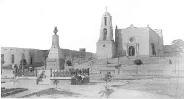
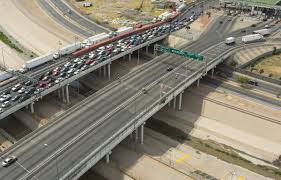

HISTORIA
📜 Historia de Ciudad Juárez
⏳ Fundación y Época Colonial (1659-1821)
- Fue fundada el 8 de diciembre de 1659 por el misionero franciscano Fray García de San Francisco, bajo el nombre de Misión de Nuestra Señora de Guadalupe de los Mansos del Paso del Norte.
- La ciudad se estableció como un punto de evangelización para los indígenas Mansos y como un paso clave para los españoles en su camino hacia el norte.
- Durante la Colonia, se convirtió en una ruta comercial importante entre la Nueva España y lo que hoy es Estados Unidos.
🇲🇽 Independencia y Siglo XIX (1821-1910)
- En 1823, después de la Independencia de México, la región pasó a llamarse Paso del Norte y comenzó a crecer como un centro comercial.
- En 1848, con la firma del Tratado de Guadalupe Hidalgo, México perdió gran parte de su territorio norte, y El Paso (Texas) quedó en EE.UU., mientras que Paso del Norte siguió siendo parte de México.
- En 1888, en honor a Benito Juárez, quien se refugió aquí durante la intervención francesa, la ciudad cambió su nombre a Ciudad Juárez.
🔥 Revolución Mexicana (1910-1920)
- Ciudad Juárez fue clave en la Revolución Mexicana. Aquí ocurrió la Batalla de Ciudad Juárez (1911), donde las fuerzas revolucionarias de Francisco I. Madero, Pascual Orozco y Pancho Villa vencieron al ejército de Porfirio Díaz, lo que llevó a la renuncia del dictador.
- Durante el conflicto, la ciudad fue un punto estratégico de entrada de armas y un refugio para revolucionarios.
🚀 Crecimiento y Desarrollo (1920-2000)
- En la época de la Prohibición en EE.UU. (1920-1933), Ciudad Juárez se convirtió en un destino popular para los estadounidenses que buscaban alcohol, juego y entretenimiento.
- Durante la Segunda Guerra Mundial, el programa Bracero permitió que muchos trabajadores mexicanos fueran a EE.UU. a laborar en el campo, lo que fortaleció la conexión entre Juárez y El Paso.
- En los años 60 y 70, la ciudad experimentó un boom industrial con la llegada de las maquiladoras, fábricas ensambladoras que atrajeron inversión extranjera y migración interna.
⚖️ Retos y Actualidad (2000-presente)
- A partir de los años 2000, la ciudad enfrentó problemas de violencia relacionada con el narcotráfico, pero en la última década ha logrado mejorar su seguridad.
- Actualmente, Ciudad Juárez sigue siendo uno de los principales motores económicos de México, con su fuerte industria maquiladora y comercio internacional.
- Su ubicación fronteriza sigue influyendo en su cultura, economía y sociedad, con un constante flujo de personas y comercio entre México y Estados Unidos.

